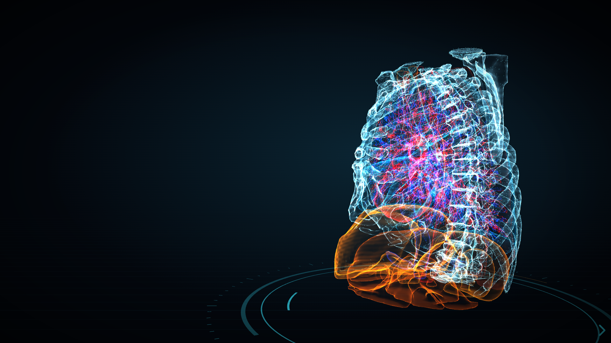
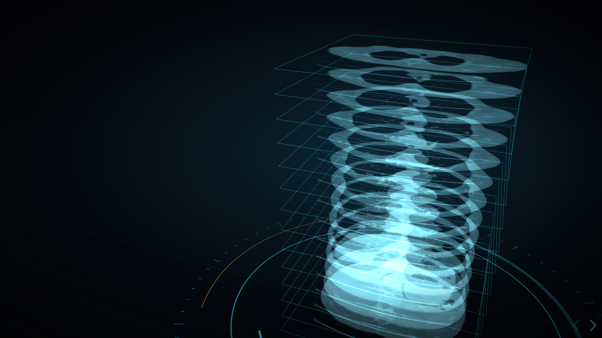
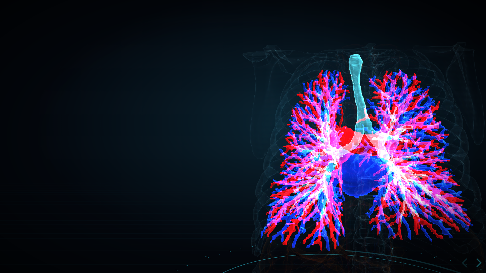
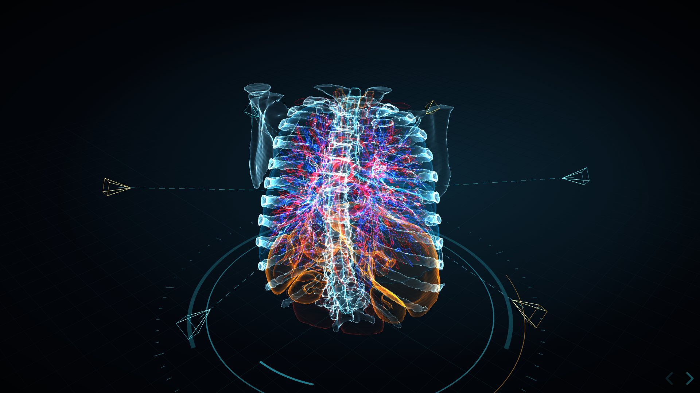
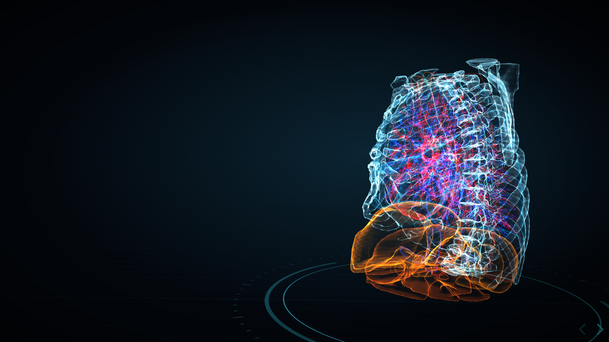

Dosier para inversores · Confidencial
De la resonancia y el TAC a una anatomía que se imprime, se recorre en realidad virtual y se superpone en realidad aumentada. Sin que los datos salgan del hospital.
Versión 2.53.4
Fecha 2026-11-04
Contacto [nombre · correo · teléfono]
01 · Resumen ejecutivo
MRAnalyzer convierte un estudio de imagen médica (resonancia, TAC o radiografía) en modelos 3D de los órganos, vasos, huesos y lesiones del paciente, listos para imprimir, explorar en realidad virtual entre varias personas o superponer en realidad aumentada. Todo el proceso es automático y se ejecuta en un ordenador del propio centro.
Obtener la anatomía en 3D exige segmentar a mano, corte a corte, con herramientas especializadas y dispersas. Y los datos de pacientes no deberían salir del centro.
Un único flujo: DICOM → inteligencia artificial con controles → mallas 3D fieles → impresión, RV, RA e informe. El usuario no necesita saber de segmentación.
2.53.4
versión actual, con instalador firmado para Windows
177
pruebas automáticas que pasan en cada versión
117
estructuras anatómicas reconocidas en un TAC
100 %
local: las imágenes no salen del equipo
02 · Problema y oportunidad
Un TAC o una resonancia son cientos de imágenes en escala de grises. Para planificar una cirugía, enseñar anatomía o explicar una lesión a un paciente hace falta verla en 3D, y hoy eso significa:

| Uso | Qué aporta MRAnalyzer | Cliente |
|---|---|---|
| Planificación quirúrgica | Modelo impreso o en RV de la anatomía del paciente antes de operar | Servicios quirúrgicos de hospitales |
| Docencia | Laboratorio de RV compartido con casos reales anonimizados | Facultades y hospitales universitarios |
| Información al paciente | Explicar una lesión con su propia anatomía en 3D | Consultas y servicios de imagen |
TAM
[€ __]
[definición y fuente]
SAM
[€ __]
[definición y fuente]
03 · Producto
01 · Entrada
Estudio DICOM
RM, TAC o radiografía, anonimizado
02 · IA
Segmentación
órganos, huesos, vasos, tejidos y hallazgos
03 · Geometría
Mallas 3D
lisas, cerradas y fieles al borde real



Imágenes generadas por MRAnalyzer a partir de muestras públicas de 3D Slicer (CTChest y MRHead), no de pacientes.
04 · Tecnología y ventaja
Las redes proponen y la anatomía comprueba: reglas anatómicas, una segunda red que compite órgano a órgano y pesos verificados por huella criptográfica.
Del archivo DICOM a la pieza impresa, la sala de RV y la RA sobre el modelo impreso, en la misma aplicación.
Sin nube: el análisis corre en el equipo del centro y aprovecha la tarjeta gráfica si la hay.
| Capa | Tecnología | Tamaño |
|---|---|---|
| Motor de análisis | Python: SimpleITK, SciPy, PyTorch, scikit-image, trimesh | ≈ 37 000 líneas |
| Interfaz y RV | Web: Three.js y WebXR (visor, editor, sala compartida) | ≈ 14 000 líneas propias |
| Realidad aumentada | App nativa de Meta Quest 3 (Unity / C#) con red de detección propia | emparejada con el PC |
| Redes integradas | TotalSegmentator, SynthSeg, HD-BET, MRSegmentator, nnInteractive, UNet++ para tumores | 117 estructuras en TAC |
[Qué es propio (código, red de detección, flujo automático) y qué se usa bajo licencia de terceros; licencias de los modelos (algunas, como nnInteractive, son no comerciales y habría que sustituirlas o licenciarlas); patentes o registros previstos.]
05 · Estado y competencia
| Segmentación manual en software generalista | Plataformas comerciales de planificación | MRAnalyzer | |
|---|---|---|---|
| Automático de principio a fin | No | [Parcial] | Sí |
| Impresión, RV y RA en uno | No | [Parcial] | Sí |
| Datos sin salir del centro | Sí | [Depende] | Sí |
| Certificado como producto sanitario | [Según producto] | [Según producto] | Aún no (ver hoja de ruta) |
| Precio | [__] | [__] | [__] |
Rellenar las celdas entre corchetes con competidores concretos y sus fuentes.
06 · Negocio y hoja de ruta
[Licencia anual por centro / por servicio · precio orientativo · servicios de impresión · formación]
[Trimestre / año]
Validación clínica con [servicio / hospital] frente a la segmentación manual de expertos.
[Trimestre / año]
Sistema de calidad y documentación técnica para el marcado CE.
[Trimestre / año]
Primeros clientes de pago [docencia / planificación].
[Trimestre / año]
[Siguiente hito]
| Riesgo | Mitigación |
|---|---|
| Certificación lenta o costosa | [Plan regulatorio; empezar por usos no diagnósticos como la docencia] |
| Licencias de modelos de terceros | [Sustituir o licenciar los de uso no comercial] |
| Precisión en casos difíciles | Controles anatómicos, segunda opinión y corrección manual en el editor; [validación clínica] |
07 · Equipo y ronda
[Rol · experiencia relevante]
[Rol · experiencia relevante]
[Servicio · centro]
Buscamos
[€ ___ ___]
[instrumento: participaciones / préstamo convertible / subvención]
| Uso de los fondos | % |
|---|---|
| Validación clínica | [__ %] |
| Certificación (MDR) | [__ %] |
| Desarrollo de producto | [__ %] |
| Comercial | [__ %] |
Gracias
[Nombre] · [correo] · [teléfono] · [web]